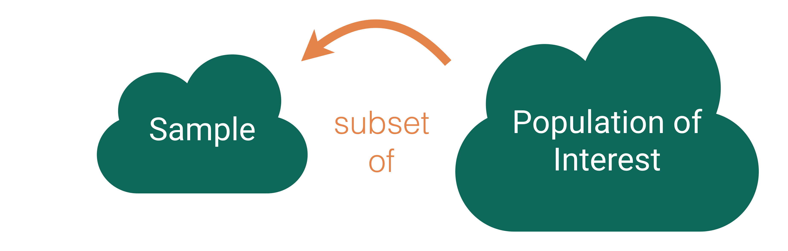
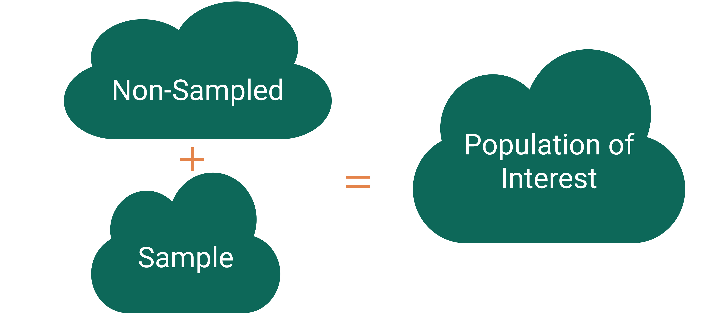
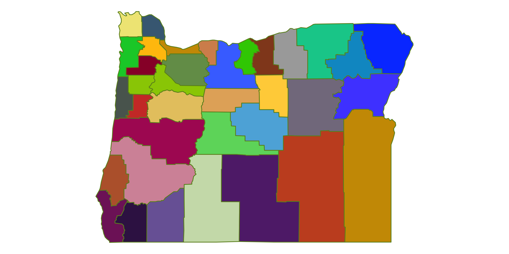
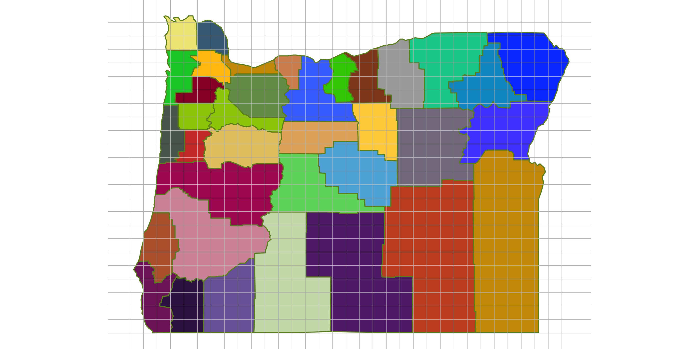
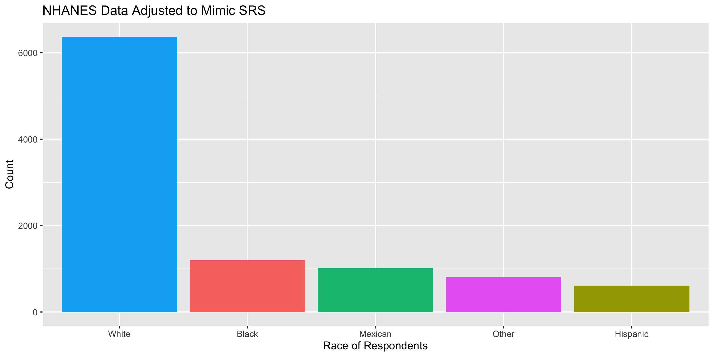
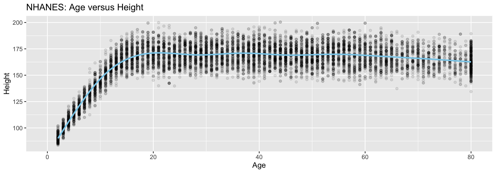

→ But let us help you ensure it is a productive struggle.
→ Struggling does NOT mean you are bad at stats, it actually means you are doing the work to learn the material!
Now for Data Collection
Motivating Our Discussion of Data Collection
Who are the data supposed to represent?
Key questions:
What evidence is there that the data are representative?
Who is present? Who is absent?
Who is overrepresented? Who is underrepresented?
Who are the data supposed to represent?
Census: We have data on the whole population!
Who are the data supposed to represent?

Who are the data supposed to represent?
Key questions:
What evidence is there that the sample is representative of the population?
Who is present? Who is absent?
Who is overrepresented? Who is underrepresented?
Sampling Bias

Sampling bias: When the sampled units are systematically different from the non-sampled units on the variables of interest.
Sampling Bias Example
The Literary Digest was a political magazine that correctly predicted the presidential outcomes from 1916 to 1932. In 1936, they conducted the most extensive (to that date) public opinion poll. They mailed questionnaires to over 10 million people (about 1/3 of US households) whose names and addresses they obtained from telephone books and vehicle registration lists.
Population of Interest:
Sample:
Sampling bias:
Random Sampling
Use random sampling (a random mechanism for selecting cases from the population) to remove sampling bias.
Types of random sampling
Simple random sampling
Cluster sampling
Stratified random sampling
Systematic sampling
Why aren’t all samples generated using simple random sampling?
US Forest Inventory and Analysis Program
Mission: “Make and keep current a comprehensive inventory and analysis of the present and prospective conditions of and requirements for the renewable resources of the forest and rangelands of the US.”
Need a random sample of ground plots to say something about the state of our nation’s forests!
FIA: Simple Random Sampling
Break the landscape up into equally sized plots (~1 acre).
Break the landscape up into equally sized plots (~1 acre).
Put each plot in a cluster.
For our example: cluster = county.
Number each cluster.
Use a random mechanism to sample 2 clusters.
Sample all plots in those 2 clusters.
sample(x =1:36, size =2)
[1] 4 8
Thoughts on this sampling design?
FIA: Cluster Random Sampling
Break the landscape up into equally sized plots (~1 acre).
Put each plot in a cluster.
For our example: cluster = county.
Number each cluster.
Use a random mechanism to sample 2 clusters.
Take a simple random sample within the sampled clusters.
sample(x =1:36, size =2)
[1] 17 6
sample(x =1:---, size =---)
Subsampling within each sampled cluster is much more common than subsampling the whole sampled cluster!
FIA: Cluster Random Sampling

Are our clusters based on counties homogeneous?
Why is homogeneity important for cluster sampling?
FIA: Stratified Random Sampling
Break the landscape up into equally sized plots (~1 acre).
Put each plot in a stratum.
For our example: stratum = county.
Take a simple random sample within every stratum.
Don’t have to be equally sized!
# Do this for each stratumsample(x =1:---, size =---)

Thoughts on this sampling design?
FIA: Systematic Random Sampling
This is FIA’s actual sampling design (okay, slightly simplified).
Break the landscape up into equally sized plots (~1 acre).
Number each plot from 1 to 62,963,840.
Use a random mechanism to pick starting point. Then sample about once every 6000 acres.
sample(x =1:62963840, size =1)
[1] 14965002
Why is this design better than simple random sampling?
National Health and Nutrition Examination Survey
Mission: “Assess the health and nutritional status of adults and children in the United States.”
How are these data collected?
NHANES Sampling Design
Stage 1: US is stratified by geography and distribution of minority populations. Counties are randomly selected within each stratum.
Stage 2: From the sampled counties, city blocks are randomly selected. (City blocks are clusters.)
Stage 3: From sampled city blocks, households are randomly selected. (Households are clusters.)
Stage 4: From sampled households, people are randomly selected. For the sampled households, a mobile health vehicle goes to the house and medical professionals take the necessary measurements.
Why don’t they use simple random sampling?
Careful Using Non-Simple Random Sample Data

Detour: Data Ethics
Data Ethics
“Good statistical practice is fundamentally based on transparent assumptions, reproducible results, and valid interpretations.” – Committee on Professional Ethics of the American Statistical Association (ASA)
→ These guidelines are for EVERYONE doing statistical work.
→ There are ethical decisions at all steps of the Data Analysis Process.
→ We will periodically refer to specific guidelines throughout this class.
“Above all, professionalism in statistical practice presumes the goal of advancing knowledge while avoiding harm; using statistics in pursuit of unethical ends is inherently unethical.”
Responsibilities to Research Subjects
“The ethical statistician protects and respects the rights and interests of human and animal subjects at all stages of their involvement in a project. This includes respondents to the census or to surveys, those whose data are contained in administrative records, and subjects of physically or psychologically invasive research.”
Responsibilities to Research Subjects
Why do you think the Age variable maxes out at 80?

“Protects the privacy and confidentiality of research subjects and data concerning them, whether obtained from the subjects directly, other persons, or existing records.”